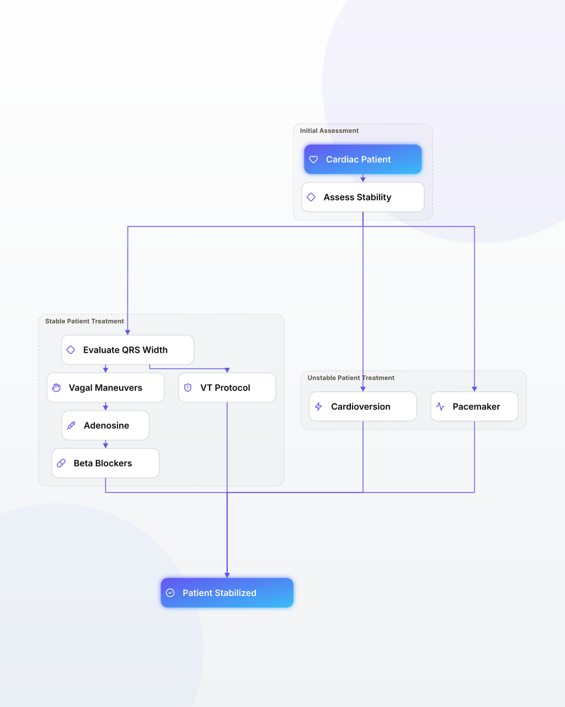

- Inestabilidad hemodinámica (hipotensión, choque, dolor isquémico, edema pulmonar agudo o alteración de conciencia) requiere cardioversión eléctrica sincronizada inmediata en taquiarritmias.
- En bradiarritmias sintomáticas o inestables, el tratamiento farmacológico inicial es Atropina 0.5 - 1 mg EV bolo, preparando marcapaso transcutáneo.
- Taquicardia de complejo QRS angosto (<0.12s) estable: 1° Maniobras vagales (Valsalva modificada), 2° Adenosina 6 mg EV bolo rápido.
- Taquicardia de complejo QRS ancho (>=0.12s) en adulto con antecedentes cardiovasculares debe manejarse como Taquicardia Ventricular hasta demostrar lo contrario.
Conducta: Cardioversión eléctrica sincronizada inmediata con 120-200 Joules previa sedación rápida si la conciencia lo permite.
Definición y Concepto Fundamental
El manejo de urgencia en arritmias comprende el conjunto de medidas diagnósticas y terapéuticas inmediatas orientadas a estabilizar al paciente que cursa con un trastorno del ritmo cardíaco asociado a riesgo vital inminente o deterioro hemodinámico severo. La premisa fundamental en la medicina de urgencia no es el diagnóstico electrocardiográfico exacto inicial, sino la determinación del estado de perfusión tisular y la presencia de inestabilidad hemodinámica.
Fisiopatología de la Inestabilidad Hemodinámica
Tanto las taquiarritmias como las bradiarritmias severas alteran el gasto cardíaco ($GC = FC \times VS$). En las taquiarritmias severas (frecuencias > 150x'), el tiempo de llenado diastólico del ventrículo izquierdo disminuye drásticamente, lo que reduce el volumen sistólico, colapsa el gasto cardíaco y disminuye la perfusión de las arterias coronarias (que ocurre predominantemente en diástole). En las bradiarritmias severas (frecuencias < 40x'), a pesar de un volumen sistólico compensatorio, la frecuencia extremadamente baja es insuficiente para mantener el gasto cardíaco mínimo requerido por los órganos nobles.
Criterios Clínicos de Inestabilidad (Los 4 Signos Cardinales)
Ante cualquier arritmia en urgencias, debe buscarse activamente la presencia de al menos uno de los siguientes 4 criterios de inestabilidad:
- Signos de Choque / Hipotensión: Presión arterial sistólica < 90 mmHg, presión arterial media (PAM) < 65 mmHg, frialdad distal, llenado capilar lento (>3 segundos) o oliguria.
- Alteración Aguda del Estado Mental: Somnolencia, confusión, agitación psicomotora o síncope secundario a hipoperfusión cerebral aguda.
- Isquemia Miocárdica Activa: Dolor torácico opresivo de características anginosas o cambios isquémicos agudos en el ECG.
- Insuficiencia Cardíaca Aguda: Congestión pulmonar franca (crépitos bibasales difusos, ortopnea, tercer ruido, edema pulmonar agudo en radiografía).

| Fármaco | Indicación | Dosis / Vía | Precauciones / EUNACOM Tip |
|---|---|---|---|
| Adenosina | TPSV regular de complejo angosto estable | 6 mg EV bolo rápido en vena antecubital + 20 ml SF | Contraindicada en asma severo. Causa rubor y pausa asistólica corta. |
| Amiodarona | TV monomórfica estable / FA descompensada | 150 mg EV en 10 min, infusión 1 mg/min x 6h | Hipotensión arterial, bradicardia. Monitorizar QT. |
| Atropina | Bradiarritmia sintomática / BAV nodal | 0.5 - 1 mg EV bolo (repetir c/3-5 min max 3mg) | Ineficaz en BAV infranodal (Mobitz II / BAV 3° alto). |